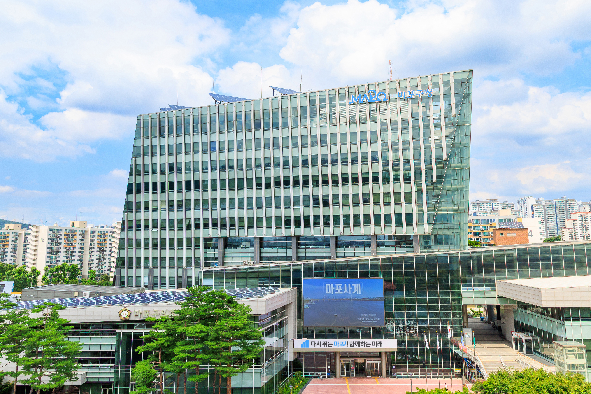

마포구, 내일 ‘청렴페스타’로 일상 속 청렴 문화 조성
8월 26일 구청 로비·대강당서 룰렛 퀴즈·팝페라 등 진행

[시사포커스 / 김재록 기자] 마포구(구청장 유동균)는 8월 26일 ‘2026년 마포구 청렴페스타’를 개최한다. 마포구에 따르면 이번 행사는 청렴 의식을 높이고 공정한 조직문화를 조성해 주민에게 신뢰받는 행정을 구현하기 위해 마련됐다. 딱딱한 교육 형식이 아닌 직원들이 직접 참여하고 소통하는 방식으로 꾸며 청렴의 가치와 의미를 쉽고 자연스럽게 느낄 수 있도록 했다.
‘청렴페스타’는 ‘출근길 청렴 캠페인’과 ‘청렴콘서트’ 두 축으로 진행된다. 오전 8시 30분부터 마포구청 1층 로비에서는 ‘청렴 룰렛 퀴즈’와 ‘청렴나무 가꾸기’가 운영된다. 유동균 마포구청장도 직원들과 함께 청렴 룰렛을 돌리고 퀴즈를 풀며 청렴 실천에 동참한다. 직원들은 청렴·조직문화·구정에 대한 의견을 메모지에 자유롭게 적어 청렴나무에 게시하며 공감대를 넓힌다. 오후 2시에는 대강당에서 ‘청렴콘서트’가 열린다. 청렴토크쇼·청렴특강·청렴팝페라 등이 펼쳐지며, 공직자가 알아야 할 주요 법령과 제도를 실무 사례 중심으로 풀어내 직원들의 이해를 돕는다. 유동균 마포구청장은 "청렴은 법과 규정을 아는 것에 그치지 않고, 조직의 일상과 관계 속에서 실천할 때 비로소 문화로 자리 잡는다"며 "청렴페스타가 직원의 진솔한 목소리를 듣고 함께 답을 찾아가는 계기가 되길 바라며, 공정하고 신뢰받는 마포구정을 만드는 데 최선을 다하겠다"고 말했다.
마포구청은 이번 청렴페스타를 단발성 행사로 끝내지 않고, 구청 구성원 모두가 일상 속에서 청렴을 내재화하는 조직문화 구축의 출발점으로 삼겠다는 방침이다. 특히 청렴나무에 게시된 직원들의 의견을 정책에 반영하고, 청렴콘서트에서 제시된 실무 사례를 바탕으로 내부 청렴 지침을 보완해 나갈 계획이다. 마포구는 앞으로도 구민이 신뢰할 수 있는 투명하고 공정한 행정을 위해 청렴 문화 확산에 지속적으로 노력할 것이라고 밝혔다.